Git Versioning
Note: Terminal commands are displayed this way
To start practicing Git:
- Open an empty folder in VScode
- Create a new file e.g. index.html
- create a basic html page (emmet VScode html[] template or other)

- save the file
- In the console window type in:
git init
You will get a response from the git server saying the folder was initialized
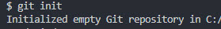
You can also notice that the explorer window now shows some new features
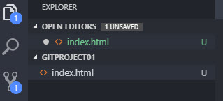
- The Fork sign is now active , it is managing the versioning of Git
- It also says theres 1 unsaved change
to "stage" the file in Git type in:
git add .
the . in the end of the command means "all files", we can always decide to stage a single file by its name.
After adding a new file to the project, it can be added to "staging" by simply pressing the '+' button next to it in the Git view of the project
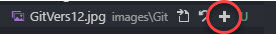
in this stage, you can see in the window explorer that the file is "Staged"
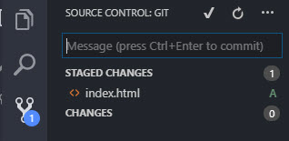
To save the changes to the Git repository, in the terminal window type in:
git commit -m "Created the html file"
you should get a response from the server as follows:
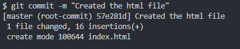
You have just created a new version of the project and saved it to the local Git repository
During changes you will see a green mark in the line you are working in, mean "you added a line"
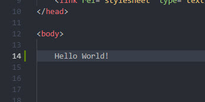
Clicking this mark, will open a window in h code shouwing the changes
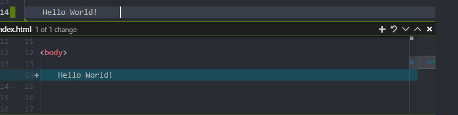
As noted previously: starting the 2nd commit to a file, the 'add' and 'commit' action can be made together with the
git commit -am "commit message"
After a change is made, clicking the file in the Git window, will show the "Working tree window", the commited and the edited versions of the file , side by side.
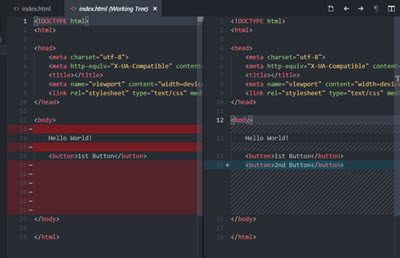
Instead of using the terminal window, we can use the Message window in the explorer window to add a commit message and CTRL+Enter to make commit.
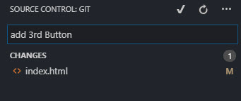
Reverting and recovering changes
If a file (or a whole project) was deleted, we can recover it in two ways:
-
from the terminal windows
git checkout head .
from the explorer window, we can recover the deleted file (marked in D), whith right cloick and "Discar changes"
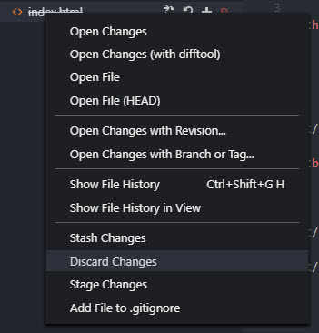
Git Branching
Branching is creating a new path of version , parallel to the original branch, called 'master'
To create a branch:
git checkout -b newBranchName
To show all the branches:
git branch
To switch between branches(e.g. to master):
git checkout master
To merge a branch into the master branch:
- Revert to the master branch:
git checkout master
Merge the branch to it:
git merge newBranchName
In case of conflicts between the master and merged branch,
Git can resolve some automatically
Other conflicts will need to be manually resolved
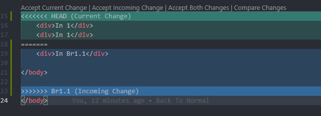
back to main page